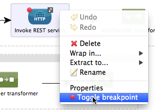
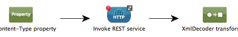
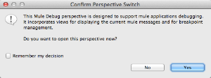
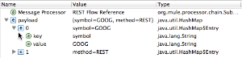
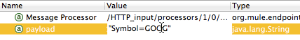
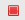
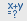
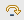
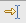
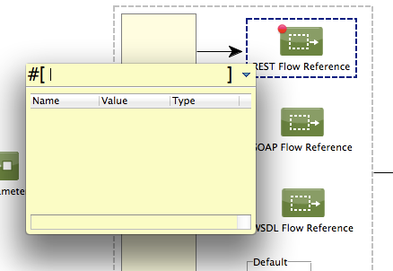

Studio Visual Debugger
Studio’s Visual Debugger allows you to run your application in Debug mode, stopping execution to check the contents of a message at previously-specified building blocks.
To do this, you set a breakpoint at any building block in your flow that you wish to check or test (see image below). When you run your application in Debug mode, the application stops immediately after executing the building block with the breakpoint. Using the Mule Debugger View, you can browse through the contents of the message as it exists at that point in the flow, and evaluate Mule Expressions against the message.
|
Studio Debugger only works with Enterprise Edition runtimes and does not connect to Comunity Edition runtimes. |
Note that the Visual Debugger is completely distinct from the Java Debugger contained in Studio; in fact, you may run both debuggers concurrently on your application.
Assumptions
This document assumes that you are familiar with the Anypoint Studio Essentials, particularly Studio Building Blocks. Review the Getting Started with Mule Studio chapter to learn more about developing with Mule ESB’s graphical user interface.
Prerequisites
When debugging on your local machine, Studio Visual Debugger listens for incoming TCP connections on localhost port 6666. This port must be available on your machine, i.e. not blocked by a firewall or other security software.
If you plan to remotely debug an application running in an external Mule ESB server, you will need connectivity between your machine (where you run Studio Visual Debugger) and the ESB server’s debug port, by default 6666. Ensure that there are no routing issues or firewalls blocking access between your host and the ESB server’s debug port.
(For additional information on remote debugging, see the section <Debugging Remotely,Debugging Remotely> in this page.)
|
Testing connectivity to a remote Mule ESB server with the telnet command From the host where you plan to run Studio Visual Debugger, telnet to the host and port where Mule ESB is listening, by opening a terminal and running the following command: If the connection succeeds, you should see output similar to the following: The above output indicates that the connection was successful. A "connection refused" error indicates that nothing is listening on the specified host and port (the ESB server is not running, or not running in debug mode, or listening on another port). Any other output, or lack of output, indicates a connectivity problem, such as a routing issue or firewall blocking requests between your host and the ESB host. |
Using the Visual Debugger
Complete the following macro-steps to use the Visual Debugger in Studio.
-
Setting Breakpoints breakpoints on building blocks in your application.
-
Running in Debug Mode the application in Debug mode.
-
Viewing Message Data at a Breakpoint and/or Evaluating Mule Expressions the data in the first building block with a breakpoint.
-
Resume application execution.
-
Repeat step 3 with the next building block with a breakpoint, if any.
Setting Breakpoints
-
Right-click a building block, then select Toggle breakpoint.
 -
Studio applies a red dot to the building block’s icon on the canvas.

When you run your application in Debug mode, Studio stops the flow execution at the breakpoint you have set, allowing you to check the message contents in the Mule Debugger View.
Running in Debug Mode
-
In the Package Explorer pane, right-click your application, then select Debug As > Mule Application. Studio begins running the application in Debug mode, and displays the Confirm Perspective Switch window.
 -
Click Yes to open the Debug perspective, from which you can access the full functionality of the Visual Debugger.
Viewing Message Data at a Breakpoint
When you begin running your application in Debug mode, Mule opens the Mule Debug perspective. Until a message arrives at the first breakpoint, the Mule Debugger View in the console displays a message that reads, "Connected with mule ESB. Waiting for a mule message to arrive!"
The image below illustrates the Mule Debug perspective.
| Number | Description |
|---|---|
1 |
Mule Debugger View displays information about a message when the flow execution reaches a breakpoint. In the image above, the application running in Debug mode has not yet received any message, so Studio displays no message information. |
2 |
Mule Breakpoint Watches tab displays the Mule Breakpoint Watches pane, where you can add, remove and edit Mule breakpoint watches. |
3 |
Mule Breakpoints View provides a listing of all breakpoints set in all Studio applications. |
4 |
Displays breakpoints in the Mule Breakpoints View. |
5 |
Checkbox for setting a breakpoint as Configuring Conditional Breakpoints. Below it is the input field for entering the desired condition. In the image above, the checkbox and the input field are grayed-out because no breakpoint is selected in the Mule Breakpoints View. |
When a message arrives at the first breakpoint, the Mule Debugger View displays two panes, as shown below.
The left pane displays the message payload (in this case, an HTTP GET request received via an HTTP Connector). The right pane displays various metadata associated with the message:
-
Inbound: message information (payload and metadata) if the message is inbound or within Mule
-
Variables: active Mule variables at execution breakpoint
-
Outbound: message information (payload and metadata) if the message is outbound
-
Session: active session variables at execution breakpoint
To resume execution, click the Resume icon (see below) or press F8. Your application runs until the message reaches the next breakpoint, if any.
Rather than simply resuming execution, you can choose to go to the next message processor, skip to a selected message processor, or stop the application. See Execution Control Tools for full details.
Mule Debugger View
This section contains a full description of the Mule Debugger View and all its available tools.
Left Pane
The left pane displays the message payload as a tree structure.
| Number | Description | Remarks |
|---|---|---|
1 |
Name column displays the name of each message property. |
The first property displayed is always the name of the message processor. |
2 |
Value column |
|
3 |
Type column |
|
4 |
Name of a message property. |
To see any nested elements for a property, click the arrow next to the property name . You can see all objects in the message payload.

|
5 |
Value of each message property |
On some message processors, you can change the message payload by editing the payload properties. Visual Debugger automatically stores the modified payload object. When you resume running the application, the message progresses with the modified value. To edit a message property:

|
Right Pane
The right pane displays message metadata.
| Number | Description |
|---|---|
6 |
Inbound pane displays message data if the message processor is an inbound endpoint. |
7 |
Variables pane displays any Mule variable currently active. |
8 |
Outbound pane displays message data if the message processor is an outbound endpoint. |
9 |
Session pane displays any session variable currently active. |
Execution Control Tools
Use the tools described in the table below to perform actions in Mule Debug perspective.
| Number | Icon | Description | Shortcut |
|---|---|---|---|
10 |
 |
Terminate – Click to stop the currently running application. |
|
11 |
 |
Evaluate Mule Expression – Click to evaluate a Mule expression. |
Linux and Windows:
|
12 |
 |
Next Processor – Click to run the application and stop at the next message processor in the flow, even if there is no breakpoint at the next processor. |
|
13 |
 |
Run to Processor – Click to run the application and stop at the currently selected processor, even if there is no breakpoint at the currently selected processor. Emulates the behavior of the "Run to cursor" option in Java debuggers. (To select a processor, single-click its building block in the canvas.) |
|
14 |
resume - Click to run the application until the next breakpoint, if any. |
|
Evaluating Mule Expressions
Complete the following steps to test a Mule expression against the message processor set with a breakpoint.
-
Ensure that Studio has stopped flow execution at the desired breakpoint. When stopped, the breakpoint appears surrounded by a dotted blue line in the canvas, and Studio populates the Mule Debugger View with information.
-
Click the Evaluate Mule Expression icon above the right-hand pane in the Mule Debugger View. Studio displays the expression evaluation window (with yellow background in the image below).
 -
Type the Mule expression you wish to evaluate in the provided input field, then press enter. Studio evaluates the expression, then displays the result in the Name, Value and Type columns.
For instance, in the example Viewing Message Data at a Breakpoint, the message is an HTTP request containing two properties, Symbol and Method. To see the value for Method, enter #[message.inboundProperties['Method'], then press Enter.
Using the expression evaluation window, you can also edit message properties or attributes. Simply right-click the property value or attribute, type the new value, then press enter.
Setting Breakpoint Parameters
You can configure breakpoints according to three parameters, described in the table below. These parameters are set in the Mule Breakpoints View.
| Type | Description |
|---|---|
Default (no parameters) |
Default configuration for a user-defined breakpoint. The breakpoint is set on a user-defined building block, and activated by default. When a message reaches the breakpoint building block, Studio stops flow execution and displays the contents of the message in the Mule Debugger View. |
Conditional |
The breakpoint is activated only if a user-defined condition evaluates to true. |
Exception |
This is a global parameter. When set, Studio stops flow execution at any building block where an exception occurs. The Mule Debugger View will display the message contents at the building block that threw the exception. |
Set these parameters in the Mule Breakpoints view, described below.
Mule Breakpoints View
This view displays all breakpoints defined in all the applications currently open in Studio. To access the Mule Breakpoints view, ensure that you are currently in the Debug Perspective. (If not, click Mule Debug under the main toolbar). From the Debug Perspective, click the Mule Breakpoints tab to the right of the Studio palette.
In the image above, the Mule Breakpoints View displays all breakpoints of all applications currently open in Studio. Studio lists the breakpoints in the following format: <application name> [<message processor number>] - <flow name>.
| Number | Description | Remarks |
|---|---|---|
1 |
Configuring Exception Breakpoints parameter (toggle) |
applies to all message processors |
2 |
remove all breakpoints |
does not remove message processors, only unsets all breakpoints |
3 |
remove selected breakpoint |
|
4 |
set selected breakpoint as Configuring Conditional Breakpoints |
|
5 |
condition to evaluate for the selected breakpoint, if set as conditional |
condition must be a boolean; breakpoint activates if condition evaluates to true. |
Activating And Deactivating Breakpoints
When you set a breakpoint, Studio activates the breakpoint by default. In the Mule Breakpoints View, indicates the activation with a checked box to the left of the breakpoint name. Uncheck the box to deactivate a breakpoint. Though deactivated, Studio does not delete the breakpoint. In the canvas pane, the breakpoint’s corresponding building block displays a gray circle instead of red.
The images below display two breakpoints, set in the first two message processors of the REST flow. The breakpoint for the first message processor, indicated as MP:1, is activated. The breakpoint for the second message processor, MP:2, is deactivated.
Configuring Conditional Breakpoints
A conditional breakpoint is activated only if a user-defined condition evaluates to true when Studio executes the building block with the breakpoint. You define the condition using a Mule Expression.
-
Click the breakpoint in the Mule Breakpoints View to select it.
-
Check Conditional at the bottom of the Mule Breakpoints View.
-
Enter the condition that must be met for the breakpoint to be activated.
For example, the following expression activates the breakpoint if the value of message property Method is REST:
#[message.inboundProperties['Method']=='REST']Configuring Exception Breakpoints
To set the Exception parameter for the application, click the Exceptions button (represented by a lightening bolt icon) in the Breakpoints View. This parameter causes any message processor in the application to become a breakpoint if it throws an exception. In such a case, Studio stops flow execution at the message processor which threw the exception, then displays the message in the Mule Debugger View. Additionally, Studio displays the exception throwing building block surrounded by a red, dotted-line square (see image below).
In the image above, the XsltRest transformer building block threw an exception, stopping application execution. (Notice that the building block was not set as a breakpoint.) The Mule Debugger View displays the message content, allowing you to see the contents of the exception.
Using Mule Expression Watches
Mule Visual Debugger can watch for selected Mule expression in all active breakpoints. If the expression occurs at at any of the active breakpoints, Mule evaluates the expression, then displays the result in the Mule Expression Watches view.
To access the Mule Expression Watches view, ensure that you are currently in the Mule Debug Perspective. (If not, click Mule Debug under the main toolbar). From the Debug Perspective, click the Mule Expression Watches tab to the right of the Studio Palette.
Mule Expression Watches View
| Numer | Description |
|---|---|
1 |
Add Expression icon. Click to add a Mule expression to watch for. |
2 |
Delete Expression icon. Click to delete the selected Mule expression. |
3 |
*Delete All Expression*s icon. Click to delete all Mule expressions on the watch list. |
-
To instruct Studio to watch for an expression, click the Add Expression icon shown above.
-
Mule prompts you to enter the new expression for which to watch.
-
Studio displays the new Watch in the Mule Expression Watches View, as shown above. If your expression is a declaration, Mule returns a boolean; if not, Mule returns the value. For example:
-
The expression
message.payload == 'myPayload'returns eithertrueorfalse. -
The expression
message.payloadreturns the value ofmessage.payload.
-
Debugging Remotely
You can debug an application on a remote Mule ESB Server using Remote Mule Application. To do so, you must start the ESB server in debug mode, then connect to the server from Studio.
|
Starting Mule ESB Server In Debug Mode
-
To start the server in debug mode, use the following parameters:
Parameter Description -M-Dmule.debug.enable=true
Mandatory. Sets debugging mode in Mule ESB. Issue this parameter first.
------- -M-Dmule.debug.port=<port number>
Optional. Sets the listening port for incoming connections from Studio. If unset, the listening port will be 6666.
- -M-Dmule.debug.suspend=true
-
Optional. Sets "suspend" mode in Mule ESB. In suspend mode, Mule ESB will start, then immediately suspend application execution until it receives a connection on the debug port.
-
To pass the parameters to the server, follow one of the two methods outlined below.
-
Method 1: pass the parameters to Mule ESB on the command line in the appropriate order, as shown in the example below.
<$MULE_HOME>/bin/mule -M-Dmule.debug.enable=true -M-Dmule.debug.port=1234The command displayed above starts Mule in the foreground. To exit Mule when it is running in the foreground, press
Ctrl+C.To start Mule in debugging mode in the background, issue
startas the first parameter for themulecommand, as shown below.<$MULE_HOME>/bin/mule start -M-Dmule.debug.enable=true -M-Dmule.debug.port=1234 -
Method 2: include the parameters in the wrapper configuration file,
$MULE_HOME/conf/wrapper.conf, as shown below.
-
wrapper.java.additional.4=-Dmule.debug.enable=true
wrapper.java.additional.5=-Dmule.debug.port=1234In the code shown above, replace the parameter number to reflect the number of active parameters in your configuration file.
Connecting to the Remote Mule ESB Server
Before accessing and debugging your application on a remote server, you must first export and deploy your application to the desired Mule ESB server.
-
In Studio, click the arrow next to the debug icon (represented by a small insect) , then select Debug Configurations. Studio displays the Debug Configurations window.
-
In the window’s left pane, click Remote Mule Application.
-
Click the new configuration icon (represented by a blank page with a yellow plus sign) to add a new configuration.
-
Enter the required parameters for the configuration:
-
Name: name for this configuration
-
Host: indicates the location of the remote Mule ESB server
-
Port: indicates the listening port for the remote Mule ESB server
-
See Also
-
Read more about the Studio Visual Debugger in our MuleSoft Blog.
-
Explore DataSense, another tool to facilitate development of applications with fewer bugs at runtime
-
Use Studio, including Studio Visual Debugger, as an Eclipse plugin.
-
Learn more about setting Business Events in your Enterprise Edition Studio application.